Capitulo 1 - Sobre la comunidad
Reseña Histórica
La Unidad Educativa Privada “La Trinidad”, es una Institución Educativa que se encuentra ubicada Calle Dr. Carias, c#11 zona centro, en la ciudad La Victoria, en el Estado Aragua, fundada en el mes de septiembre del año 2018, por los esposos Herley Perozo y Lisbeth de Perozo, el primero Ingeniero Civil y la segunda TSU en RRHH. Como creyentes y seguidores de Cristo tomaron esta oportunidad de negocio como un propósito para el diseño y la obra de Jesucristo, de esta manera diseñar, construir e instruir no sólo el conocimiento y la formación de las futuras generaciones, sino reforzar y fomentar los valores basados en los fundamentos bíblicos, con esta idea y proyecto la Institución abre sus puertas el
17 de septiembre de 2018 para dar inicio al año escolar 2018-2019, según calendario escolar y llevando como epónimo el nombre de Unidad Educativa Privada “La Trinidad”, en representación del Padre, Hijo y Espíritu Santo.
La U.E.P “La Trinidad” inició con una matrícula de 130 estudiantes desde Maternal hasta 5to grado, la cual fue aumentando ese mismo año. El 17 de julio de 2019, se realizó la primera promoción de Preescolar, promoviendo a 19 estudiantes a 1er. Grado. Actualmente la institución ha duplicado la cantidad de Estudiantes con una matrícula 387 distribuido de la siguiente forma: Preescolar 52, Primaria 201 y Educación Media General 134 estudiantes.
En la actualidad, la U.E.P “La Trinidad” es una de las Instituciones con mayor número de estudiantes con necesidades especiales incorporados dentro de la comunidad estudiantil regular, siendo atendidos por personal capacitado, fomentando principalmente la inclusión, el compromiso, la igualdad, el amor y respeto a todos los seres humanos por igual, fomentando uno de los principales mandamientos bíblicos que es el amor al prójimo. La Institución implementa la Escuela de Valores, dictado por una docente capacitada y certificada, donde se refuerzan los valores de amor, amistad, justicia, respeto, solidaridad, honradez,
honestidad, tolerancia y responsabilidad, tomando como ejemplo los fundamentos bíblicos.
La Unidad Educativa Privada “La Trinidad”, se enfoca en seguir siendo una Institución con objetivos claros, brindar una educación de excelencia, contar con el personal capacitado y comprometido, ser una Institución que con la implementación de los valores y fundamentos cristianos impacten de manera positiva y significativa la vida de sus estudiantes y representantes.
A finales del año 2021 se apertura la nueva sede en la Colonia Tovar, la cual cuenta con más de 300 Estudiantes, llevando a cabo su segunda Promoción de 5to. año. Y en el año 2023, en el 5to. aniversario del colegio, se inauguró la tercera Sede de la U.E.P La Trinidad sector El Jarillo, municipio Miranda, con los mismos principios fundamentales con los que inició este proyecto, contando actualmente con una matrícula de 120 estudiantes.
Misión
La Unidad Educativa Privada “La Trinidad” tiene como misión brindar una educación integral, de excelencia y con propósito, acompañando a cada estudiante desde sus primeros años en preescolar hasta su formación como joven responsable en 5to año. Su labor educativa se fundamenta en los valores de la Palabra de Dios, promoviendo el desarrollo académico, emocional y espiritual de niñas, niños y adolescentes. En cada etapa, la institución busca sembrar principios fundamentales para la vida, como la fe, el respeto, la solidaridad y el amor al prójimo, formando seres humanos capaces de transformar su entorno con sabiduría, empatía y compromiso cristiano.

Visión
La U.E.P. “La Trinidad” aspira a consolidarse como una institución de referencia en el ámbito de la educación privada, reconocida por su compromiso con la formación integral y la vivencia de valores éticos y cristianos. Su visión es ser un espacio donde cada estudiante descubra su vocación, fortalezca su carácter y se prepare para asumir con responsabilidad los retos del mundo actual. La institución cree firmemente que educar es un acto de fe, y que cada joven formado con amor, disciplina y principios espirituales se convierte en luz para su comunidad y en testimonio vivo de los valores del Reino de Dios.

Objetivos
1. Formar integralmente a cada estudiante, desde sus primeros pasos en preescolar hasta su graduación en 5to año, cultivando su mente, corazón y espíritu, buscando que cada niña, niño y joven descubra su propósito con fe, sabiduría y amor, guiados por los principios de Dios.
2. Transformar la enseñanza en un acto de servicio y vocación, conectando cada clase con los valores cristianos, la realidad de la comunidad y el llamado a ser luz en medio de los desafíos del mundo.
3. Fortalecer el vínculo entre familia, escuela y comunidad, reconociendo que Dios obra a través de cada uno, y que educar es una misión compartida donde el respeto, la oración y el compromiso son pilares fundamentales.
4. Crear ambientes escolares llenos de paz, respeto y colaboración, donde se respire la presencia de Dios, se fomente el aprendizaje autónomo y se practique el amor al prójimo en cada interacción.
5. Promover valores que dignifican al ser humano como hijo de Dios, como la honestidad, la humildad, la justicia, la solidaridad y el perdón, integrando el estudio de los derechos humanos, la Constitución y la cultura democrática desde una mirada espiritual.
6. Fomentar el uso responsable y ético de la tecnología, para que nuestras niñas, niños y jóvenes puedan enfrentar los retos del presente con herramientas útiles, discernimiento cristiano y sensibilidad estética.
7. Invitar al estudio de la historia y la realidad social con mirada crítica y compasiva, reconociendo a cada estudiante como instrumento de transformación, capaz de construir un mundo más justo, guiado por la fe y el amor de Dios.
Estructura organizativa
En lo que concierne a la estructura organizativa, la conforman el director, Profesor Christian Barrios y la subdirectora, la Profesora Meribert Díaz. Por otro lado, la Profesora Magister Doriannys Fernandez se encarga de la coordinación de media general, Yusmely Mendez de la Coordinación de Control de Estudios y el Ingeniero Luis Lira del apartado tecnológico de la institución. Después de estos cargos, seguirían los docentes, cocineros, personal de limpieza, y por último estudiantes.

Fachadas de las Instituciones que conforman las sedes U.E.P "La Trinidad" en la Victoria.

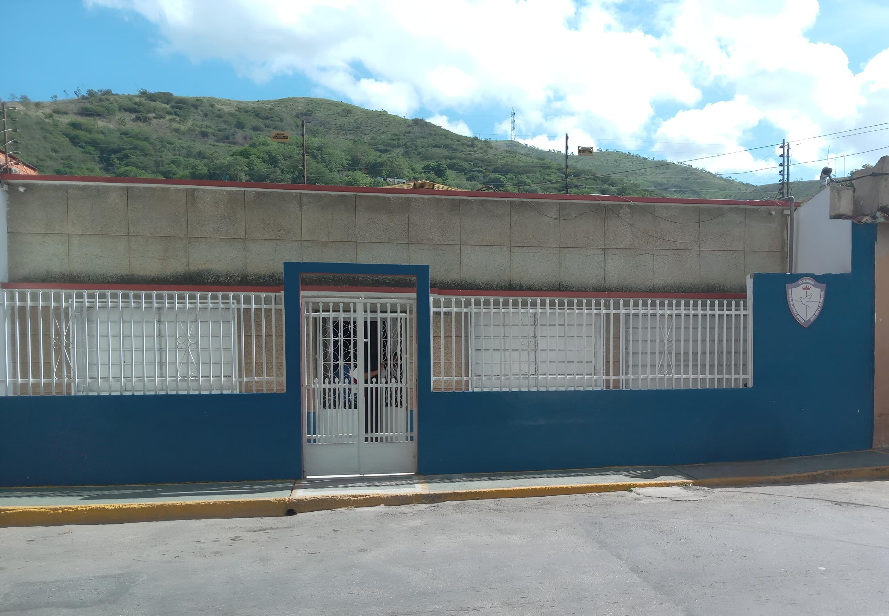
Capitulo 2 - Mantenimiento Preventivo y Correctivo
Concepto General
El mantenimiento preventivo y correctivo en informática es esencial para asegurar el funcionamiento estable y prolongado de los equipos de cómputo, especialmente en contextos comunitarios donde cada dispositivo representa una herramienta valiosa. Este manual ofrece una guía práctica para aplicar ambos tipos de mantenimiento, promoviendo el uso responsable y sostenible de los recursos tecnológicos disponibles.

Mantenimiento Preventivo
El mantenimiento preventivo se refiere a una serie de acciones programadas que buscan evitar fallos antes de que ocurran. Se realiza de forma periódica y está orientado a conservar los equipos en condiciones óptimas. Las tareas más comunes incluyen la limpieza física de componentes internos y externos, la actualización del sistema operativo y los programas, la revisión del estado de los ventiladores, la ejecución de escaneos antivirus, la organización de archivos y la verificación del estado del disco duro. Estas acciones ayudan a prevenir problemas como el sobrecalentamiento, la acumulación de polvo, la lentitud del sistema y errores críticos.
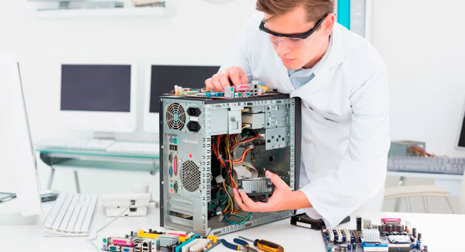
Mantenimiento Correctivo
Por su parte, el mantenimiento correctivo se aplica cuando ya se ha producido una falla o mal funcionamiento. Su objetivo es restaurar el equipo a su estado operativo. Esto puede implicar la reparación o sustitución de componentes dañados, como discos duros, memorias RAM o fuentes de poder, así como la reinstalación del sistema operativo o la eliminación de virus que afecten el rendimiento. También incluye la solución de errores de software, la recuperación de archivos y la reconfiguración de dispositivos.
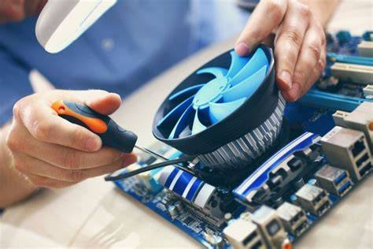
Recomendaciones
- Apagar y desconectar el equipo completamente: Antes de comenzar cualquier revisión, se recomienda apagar el computador, desconectarlo de la corriente y retirar todos los periféricos. Esto evita riesgos eléctricos y garantiza una intervención segura.
- Trabajar en un espacio limpio, seco y bien iluminado: El mantenimiento debe realizarse sobre una superficie estable, libre de humedad y polvo, preferiblemente en una mesa despejada. Esto facilita la organización y reduce el riesgo de accidentes.
- Usar una pulsera antiestática: Para evitar descargas eléctricas que puedan dañar los componentes internos, se recomienda utilizar una pulsera antiestática conectada a una superficie metálica. Es una medida sencilla pero vital para proteger el hardware.
- Utilizar herramientas adecuadas: Se aconseja contar con aire comprimido, brochas antiestáticas, paños de microfibra y destornilladores de precisión. No deben usarse líquidos ni productos abrasivos sobre los circuitos.
- Comenzar por el exterior del gabinete: La limpieza debe iniciar por la carcasa externa, retirando el polvo acumulado. Luego se puede abrir la tapa lateral para acceder al interior, siempre con cuidado y sin forzar piezas.
- Observar antes de intervenir: Es importante que la persona principiante observe la disposición de los componentes antes de desconectar o mover algo. Tomar fotos o hacer un esquema puede ayudar a recordar la ubicación original.
- Evitar retirar componentes sin conocimiento previo: Si no se tiene experiencia, lo mejor es no extraer piezas como la RAM, tarjetas o cables. En caso de hacerlo, se debe proceder con delicadeza y asegurarse de volver a instalarlos correctamente.
- Limpiar con aire y movimientos suaves: El polvo puede eliminarse con aire comprimido o brochas suaves, sin tocar directamente los circuitos. Las ranuras, ventiladores y rejillas deben quedar libres de obstrucciones.
- Revisar cables y conexiones: Se recomienda verificar que los cables estén bien conectados, sin dobleces ni desgaste. También se puede organizar el cableado con bridas para mejorar el flujo de aire.
- Establecer una rutina de mantenimiento: Realizar esta limpieza cada 3 a 6 meses es ideal para mantener el equipo en buen estado. En ambientes con polvo, humedad o mascotas, puede hacerse con mayor frecuencia.
- Tener paciencia y buscar ayuda si es necesario: Si algo no encaja o no se comprende, lo mejor es detenerse, investigar o pedir apoyo. Cada intento es una oportunidad para aprender y mejorar la confianza técnica.
Capitulo 3 - Componentes y como realizar su mantenimiento
Gabinete (Case)
El gabinete es la estructura física que contiene y protege todos los componentes internos del computador. Su función principal es brindar soporte, organización y ventilación adecuada para evitar el sobrecalentamiento. El mantenimiento consiste en apagar el equipo, desconectarlo, abrir la tapa lateral y limpiar el interior con aire comprimido o brochas antiestáticas. También se debe revisar que no haya tornillos sueltos ni obstrucciones en las rejillas. Se recomienda hacerlo cada 3 a 6 meses, o con mayor frecuencia si hay polvo, humedad o mascotas cerca.
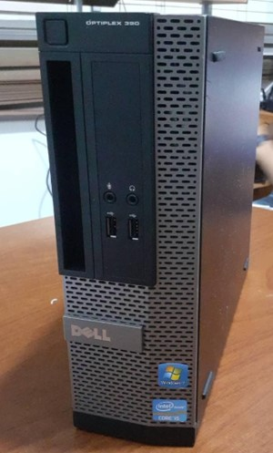
Tarjeta Madre (Motherboard)
La tarjeta madre es el circuito principal que conecta todos los componentes del PC, como el procesador, la memoria RAM, el disco duro y las tarjetas adicionales. Su función es coordinar la comunicación entre ellos y permitir que trabajen en conjunto. Para su mantenimiento, se debe limpiar con aire comprimido sin tocar directamente los circuitos, revisar que no haya polvo acumulado en las ranuras PCI y verificar que los conectores estén firmes. Se recomienda hacerlo cada 6 meses.
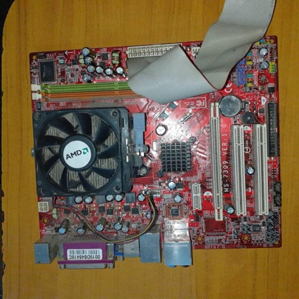
Procesador (CPU)
El procesador es la unidad central de procesamiento que ejecuta instrucciones, cálculos y operaciones lógicas. Su mantenimiento incluye revisar el disipador y el ventilador, limpiar con aire comprimido y, si es necesario, cambiar la pasta térmica con alcohol isopropílico y reaplicarla cuidadosamente. Este procedimiento debe hacerse cada 6 a 12 meses, dependiendo del uso y la temperatura del equipo.
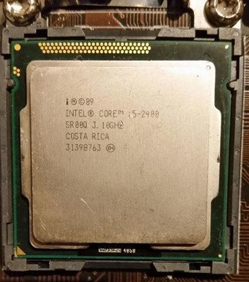
Memoria Ram
La memoria RAM es un tipo de memoria temporal que almacena datos mientras el equipo está encendido, permitiendo que el procesador acceda rápidamente a la información. Para mantenerla, se pueden retirar los módulos con cuidado, limpiar los contactos con una goma blanca o alcohol isopropílico, y volver a insertarlos firmemente. Este mantenimiento se recomienda cada 6 meses.
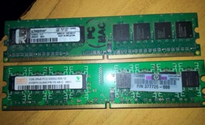
Disco duro (HDD/SSD)
El disco duro es el dispositivo de almacenamiento permanente donde se guardan archivos, programas y el sistema operativo. Su función es conservar la información incluso cuando el equipo está apagado. El mantenimiento consiste en limpiar el exterior con aire comprimido, verificar que esté bien conectado y sin ruidos extraños, y realizar respaldos periódicos de los datos. Se recomienda hacerlo cada 6 meses.
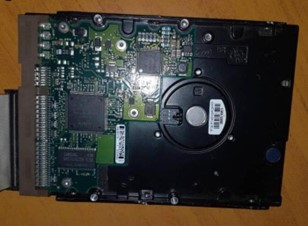
Unidad CD (CD/DVD)
La unidad óptica permite leer y grabar discos físicos como CD y DVD. Aunque menos común hoy en día, sigue siendo útil en algunos entornos. Su mantenimiento incluye limpiar la bandeja con un paño seco, usar discos limpiadores si hay fallos de lectura y verificar que el mecanismo de apertura y cierre funcione correctamente. Se recomienda cada 6 meses o según el uso.
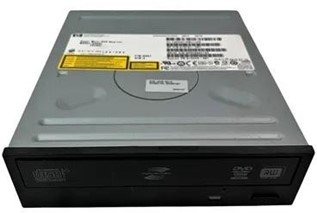
Fuente de poder (PSU)
La fuente de poder convierte la energía eléctrica en voltajes adecuados para cada componente del PC. Su función es alimentar el sistema de forma segura y estable. El mantenimiento consiste en limpiar las rejillas y el ventilador con aire comprimido, sin abrir la fuente si no se tiene experiencia técnica. También se deben revisar los cables para detectar desgaste o conexiones flojas. Se recomienda cada 6 meses o al detectar fallas.
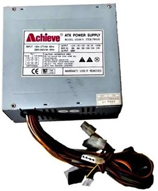
FanCooler (Ventilador del PC)
Es el componente que disipa el calor del procesador, tarjeta gráfica o gabinete, manteniendo la temperatura estable. Su función es evitar el sobrecalentamiento y proteger el rendimiento del sistema. Para mantenerlo, se debe apagar el equipo, abrir el gabinete y limpiar las aspas y rejillas con aire comprimido o brocha antiestática. Si el ventilador está montado en el disipador, se puede revisar la pasta térmica si tienes experiencia. Siempre se recomienda usar una pulsera antiestática. Se recomiendo hacerlo cada 3 a 6 meses, o antes si hay polvo, ruido o calor excesivo.
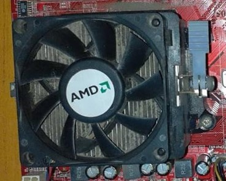
Batería (Laptop)
La batería es el componente que almacena energía eléctrica y permite que la laptop funcione sin estar conectada directamente a la corriente. Su función es permitir movilidad y uso en distintos entornos. Para mantenerla, se debe apagar la laptop, extraer la batería y limpiar sus contactos. Monitoreo recomendado para baterías internas. Se recomienda hacerlo cada 3 a 6 meses, sobretodo en ambientes calurosos o con uso intensivo.
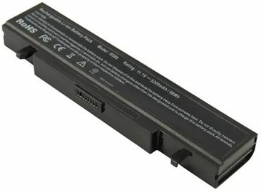
Puertos USB
Los puertos USB son conectores universales que permiten la conexión de dispositivos externos como pendrives, impresoras o cámaras. Su función es facilitar la transferencia de datos y alimentación eléctrica. Para mantenerlos, se debe limpiar con aire comprimido o hisopos secos, evitando el uso de líquidos. Se recomienda hacerlo cada 3 a 6 meses.
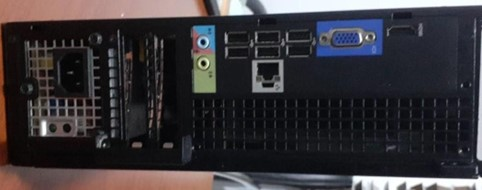
Puertos PCI
Estas ranuras en la tarjeta madre permiten instalar tarjetas adicionales como video, sonido o red. Su función es expandir las capacidades del equipo. El mantenimiento consiste en limpiar con aire comprimido, retirar las tarjetas con cuidado si es necesario, limpiar los contactos y reinstalarlas firmemente. Se recomienda cada 6 meses.
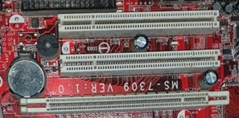
Monitor
El monitor es el dispositivo de salida visual que muestra la interfaz y contenido del computador. Su mantenimiento incluye limpiar la pantalla con un paño de microfibra seco o ligeramente húmedo, sin aplicar líquidos directamente, y revisar las rejillas de ventilación. Se recomienda cada 3 a 6 meses.
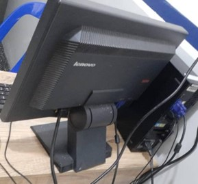
Mouse
El mouse es un periférico de entrada que permite mover el cursor y ejecutar acciones. Su mantenimiento consiste en limpiar la superficie y el sensor con un paño seco, revisar el cable si es alámbrico, y cambiar las baterías si es inalámbrico. Se recomienda cada 3 a 6 meses.
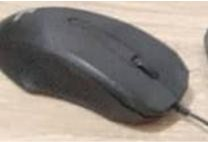
Teclado
El teclado permite ingresar texto y comandos. Para mantenerlo, se debe voltear y sacudir suavemente, usar aire comprimido entre las teclas y limpiar con un paño húmedo (no mojado). También se deben revisar las teclas trabadas o desgastadas. Se recomienda cada 3 a 6 meses.
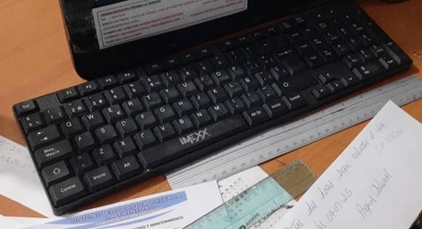
Sistema Operativo (SO)
El sistema operativo, como Windows o macOS, gestiona los recursos del PC y permite ejecutar programas. Para mantener su rendimiento, es importante hacer mantenimiento regular: limpiar archivos temporales, eliminar programas innecesarios y mantener el sistema actualizado. Las actualizaciones corrigen errores, mejoran la seguridad y aseguran compatibilidad con nuevos dispositivos. También se recomienda usar un antivirus actualizado y hacer análisis periódicos para evitar amenazas. Se recomienda hacerlo mensualmente.
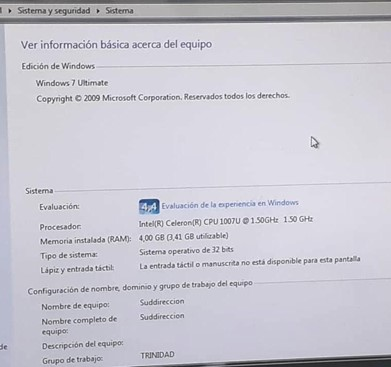
La Trinidad
Fundada por Herley Perozo y Lisbeth de Perozo. Con el propósito para el diseño y la obra de Jesucristo, de esta manera diseñar, construir e instruir no sólo el conocimiento y la formación de las futuras generaciones, sino reforzar y fomentar los valores basados en los fundamentos bíblicos.
Acceso rápido
Información de contacto

Teléfono:
 ( +58 4145110889 )
( +58 4145110889 )